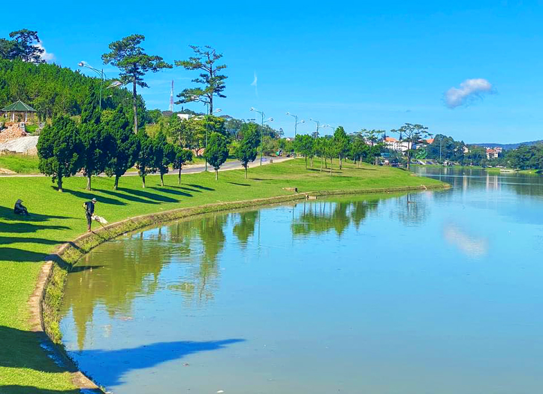
Đà Lạt - Đơn Dương - Đức Trọng - Lâm Hà
Trục trung tâm cao nguyên, nơi có phố núi, hồ, thác, đèo và các hành trình ven Đà Lạt rất dễ ghép bài.
Một hành trình được chia theo từng vùng rõ ràng: Bảo Lộc - Bảo Lâm, Đà Lạt - Đức Trọng, Đắk Nông và Bình Thuận. Nội dung tập trung vào các điểm đến nổi bật, dễ triển khai thành bài viết, lịch trình hoặc trang giới thiệu chi tiết sau này.
Các điểm đến được gom theo cụm địa lý để người xem nhìn là hiểu tuyến nào đi với tuyến nào, đồng thời bấm vào là ra ngay trang chi tiết.

Trục trung tâm cao nguyên, nơi có phố núi, hồ, thác, đèo và các hành trình ven Đà Lạt rất dễ ghép bài.

Vùng trà, thác, suối và đồi cà phê xanh mát, hợp làm cụm nghỉ dưỡng, săn mây và đi theo tuyến cao nguyên phía nam.
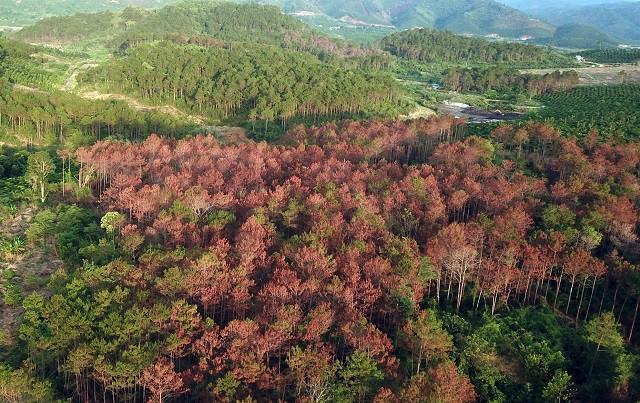
Cụm rừng, thác, suối và sinh thái phía tây nam, phù hợp viết bài chậm rãi, nhiều chất tự nhiên và ít ồn ào.
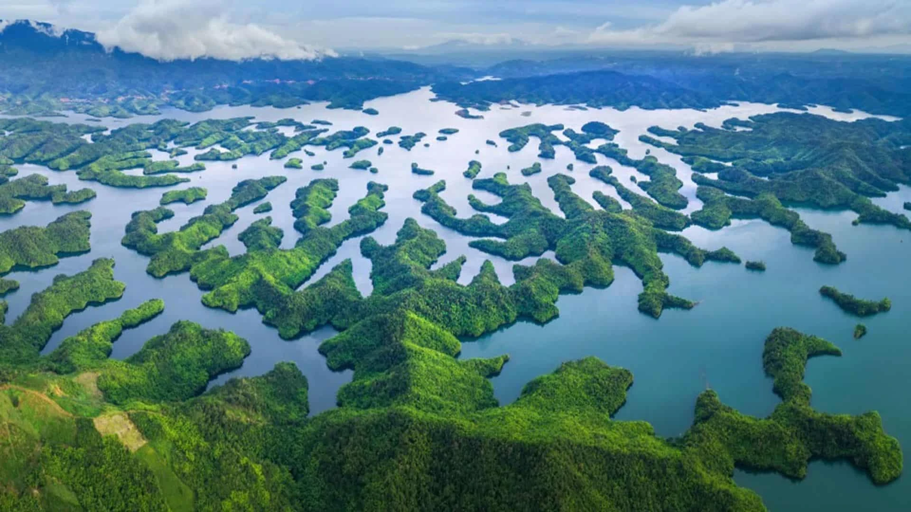
Trục du lịch địa chất và hồ núi lửa, có Tà Đùng, thác nước lớn và những hành trình phù hợp cho khám phá thiên nhiên.

Cụm biển và cát, có Mũi Né, Bàu Trắng, Hòn Rơm và các điểm ven biển rất hợp cho bài viết nghỉ dưỡng.
Danh sách được xếp theo các cụm lớn đã gom lại để dễ đọc hơn: Đà Lạt mở rộng, Bảo Lộc mở rộng, Tây Nam Lâm Đồng, Đắk Nông và Bình Thuận.

Điểm mở đầu cụm Bảo Lộc với cảnh quan thác nước xanh mát, phù hợp cho hành trình địa phương.

Không gian suối thác yên bình, hợp với nội dung nghỉ dưỡng và khám phá ngắn ngày.

Một điểm dừng mới cho tuyến du lịch Bảo Lộc, dễ kết hợp cùng các vườn cà phê và đồi xanh.

Điểm thác mới để tăng độ đa dạng cho tuyến Bảo Lộc, phù hợp nội dung ảnh và trải nghiệm tự nhiên.

Khung cảnh suối và đất cát đặc trưng, tạo thêm một điểm nhấn lạ cho khu vực Đại Lào.
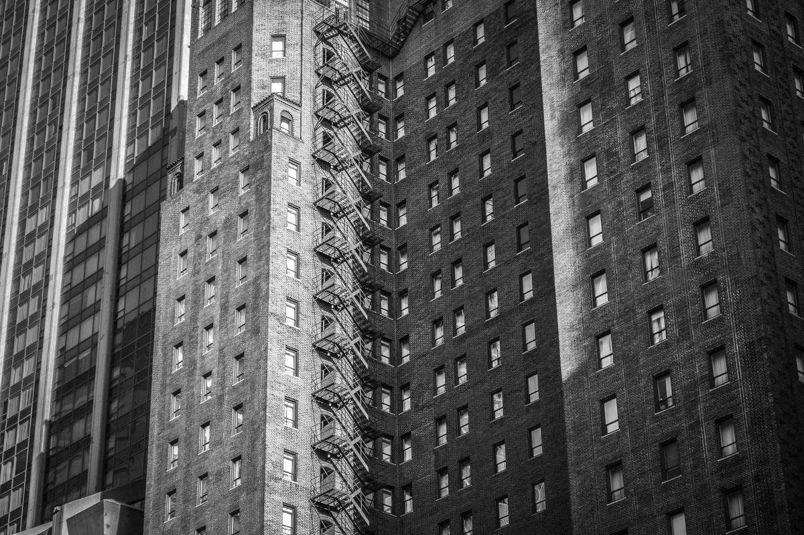
Điểm mới ở Bảo Lâm, phù hợp thêm vào cụm du lịch sinh thái và khám phá thiên nhiên.

Điểm nghỉ dưỡng và trải nghiệm phù hợp với xu hướng farmstay, cắm trại và chụp ảnh.
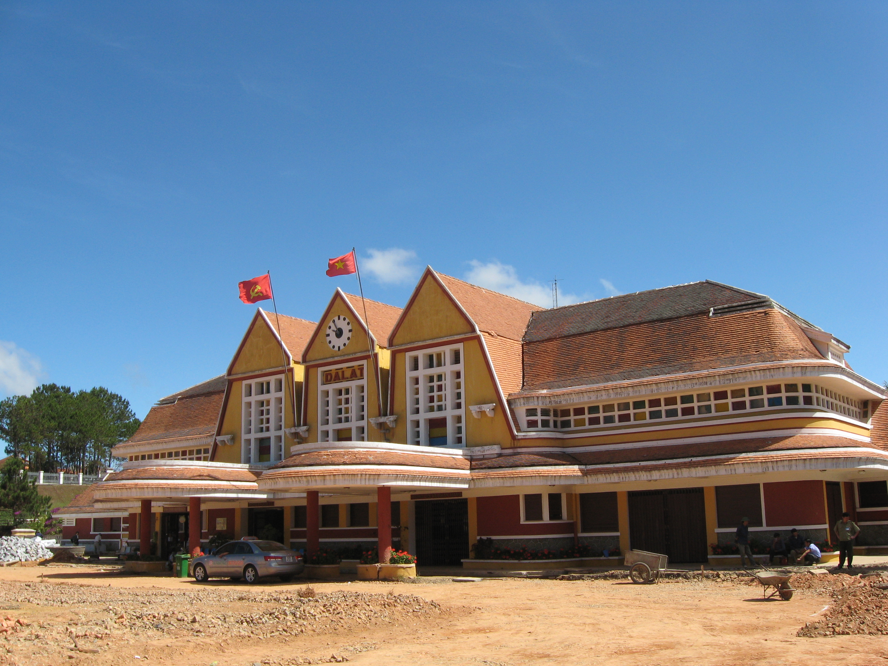
Biểu tượng kiến trúc cổ, thích hợp mở đầu hành trình khám phá phố núi.
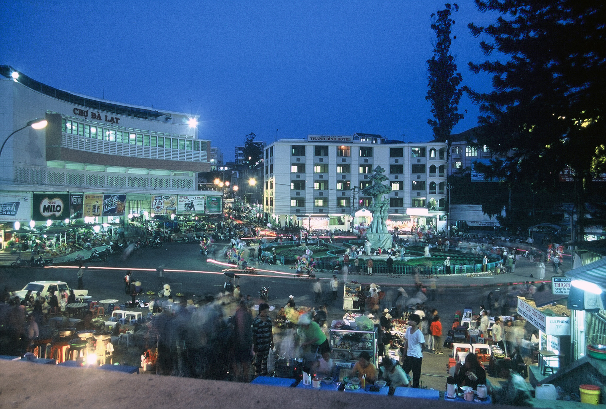
Nơi gom đủ đặc sản, hoa quả và không khí nhộn nhịp của trung tâm thành phố.
Điểm check-in nổi bật với kiến trúc bông hoa và nụ atisô ngay hồ Xuân Hương.
Không gian trung tâm phù hợp đi bộ, ngắm cảnh và chụp ảnh buổi chiều tối.
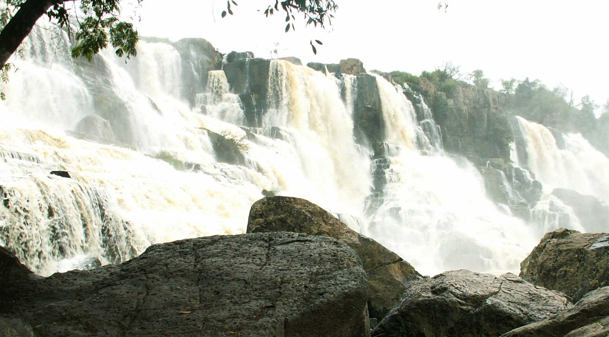
Một trong những thác nước đẹp và hùng vĩ nhất khu vực Lâm Đồng mở rộng.
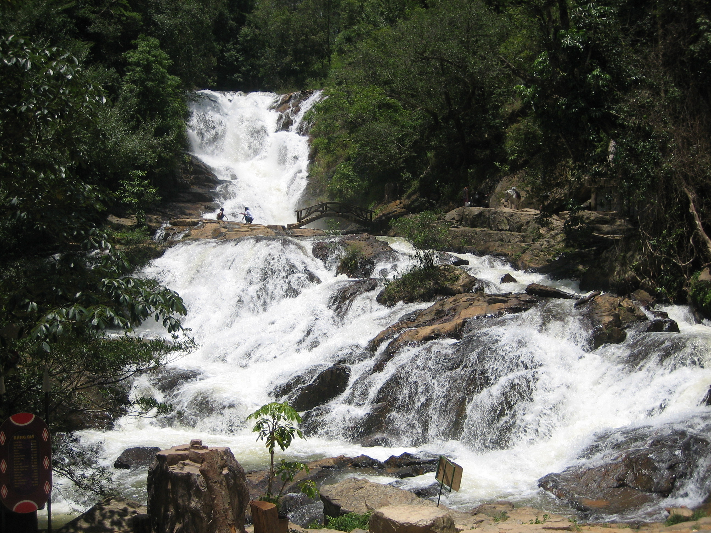
Địa điểm phù hợp trải nghiệm máng trượt, đi bộ rừng và du lịch mạo hiểm nhẹ.
Điểm dừng quen thuộc ở cửa ngõ Đà Lạt với hệ thống tham quan và cây xanh đẹp.
Điểm ngắm toàn cảnh cao nguyên, phù hợp trekking, săn mây và dã ngoại.
Thác lớn nổi tiếng của Bảo Lộc, hợp đi cùng đồi chè và các điểm nghỉ dưỡng gần đó.
Điểm ngắm mây và bình minh được nhiều người tìm đến khi lên Bảo Lộc.

Vùng hồ và đảo nhỏ đẹp theo kiểu cao nguyên, thích hợp cắm trại và ngắm bình minh.
Đồi cát trắng, hồ nước ngọt và khung cảnh rất hợp cho nội dung ảnh đẹp.
Biển, cát, resort và làng chài tạo thành một tuyến du lịch rất dễ viết thành bài riêng.
Cụm này có nhiều thác, suối, đồi chè và farmstay phù hợp để phát triển thành một chuyên mục riêng của website.
Điểm mở tuyến đẹp, cảnh quan nước và rừng hợp ảnh dọc cung đường Đại Lào.
Phù hợp nội dung sinh thái, tắm suối nhẹ và dừng chân cuối tuần.
Điểm mới để tăng chiều sâu cho cụm du lịch Bảo Lộc.
Gợi ý tốt cho ảnh thiên nhiên và bài giới thiệu trải nghiệm ngoài trời.
Điểm lạ, phù hợp khai thác thêm về Đại Lào và các khu ven đô.
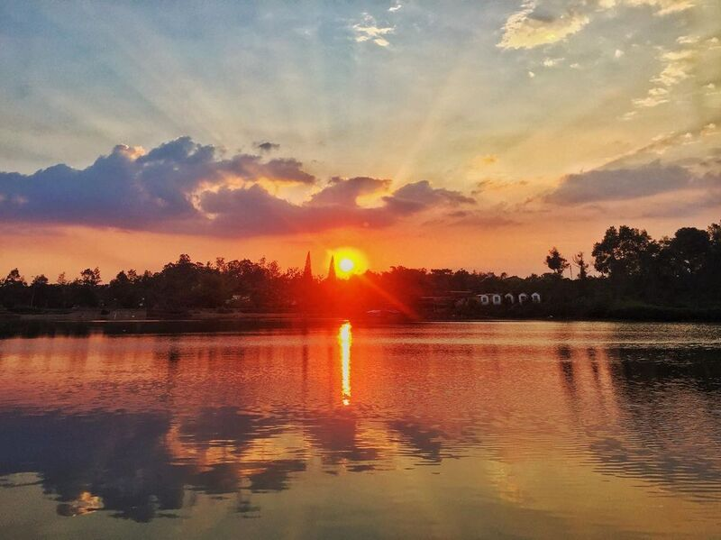
Điểm biểu tượng của Bảo Lộc, giữ vai trò mốc cảnh quan quan trọng.
Điểm dạo mát, chụp ảnh nhẹ và kết nối tốt với nội dung đô thị.
Vị trí ngắm cảnh cao, phù hợp bài viết săn mây và trekking.
Không gian rất dễ chụp ảnh, đúng đặc trưng Bảo Lộc - thủ phủ trà.
Điểm sinh thái mới ở Bảo Lâm, phù hợp nội dung khám phá địa phương.
Phù hợp du lịch nghỉ dưỡng, cắm trại và nội dung trải nghiệm farmstay.
Có thể dùng làm điểm nối giữa các thác, suối và farmstay trong khu vực.
Đây là nhóm địa danh giúp website cân bằng giữa du lịch cao nguyên và du lịch biển, phù hợp để kéo dài hành trình.
Điểm nhấn hồ và đảo nổi, rất hợp làm ảnh đại diện cho tuyến Đắk Nông.
Thêm một điểm thác tiêu biểu để làm dày nội dung du lịch sinh thái.
Điểm rất đặc trưng về địa chất, phù hợp bài khám phá chuyên sâu.
Mốc liên kết đẹp giữa tuyến hồ - thác - cao nguyên ở khu vực Tây Nguyên.
Phù hợp bổ sung vào bản đồ thác lớn của vùng.
Điểm yên tĩnh, thuận lợi cho nội dung cắm trại và ngắm cảnh.
Biển, làng chài, cồn cát và resort là bộ ba không thể thiếu.
Địa danh cát trắng đặc trưng, thích hợp làm ảnh hero cho tuyến biển.
Điểm ngắm biển, nghỉ dưỡng và kết nối thuận tiện với Mũi Né.
Một trong những điểm dạo bộ, chụp ảnh và khám phá cảnh quan đặc trưng.
Di tích văn hóa quan trọng, giúp nội dung website cân bằng giữa thiên nhiên và lịch sử.
Điểm ven biển có màu sắc địa chất đặc biệt, hợp nội dung ảnh lạ.
Bộ địa danh này giúp website có đủ điểm nhấn để viết bài giới thiệu, bài tuyến đường và các trang chi tiết sau này.
Biểu tượng trung tâm Đà Lạt, đẹp để đi dạo, đạp xe, ngắm hoàng hôn.
Nơi ngắm toàn cảnh cao nguyên, phù hợp trekking và chụp ảnh.
Không gian xanh rộng, nổi tiếng với săn mây và bình minh.
Một trong những thác đẹp nhất khu vực, thuộc Đức Trọng.
Điểm đến nổi tiếng ở Bảo Lộc, có rừng và cảnh quan thác hùng vĩ.
Không gian thanh tịnh, cổng trời, mây núi và cảnh quan Bảo Lộc.
Quán cà phê view đẹp tại Lâm Hà, nhìn ra thung lũng và vườn cà phê.
Điểm tự nhiên nổi bật gần Nam Ban, kết hợp tham quan chùa Linh Ẩn.
Dấu ấn địa chất độc đáo tại Đắk Nông, phù hợp du lịch khám phá.
Được ví như vịnh Hạ Long trên cao nguyên với nhiều đảo nhỏ giữa hồ.
Biển xanh, resort, thể thao biển và đồi cát nổi tiếng của Phan Thiết.
Đồi cát trắng, hồ nước giữa cát và cung đường ven biển rất đẹp.
Đảo nhỏ hoang sơ, nước trong, thích hợp đi biển và chụp ảnh.
Nơi ngắm thuyền thúng, bình minh và thưởng thức hải sản.
Điểm ngắm biển, chụp ảnh và khám phá kiến trúc ven biển.
Địa điểm đặc trưng của Mũi Né, đẹp nhất vào sáng sớm hoặc chiều muộn.
Điểm ngắm cảnh của Bảo Lộc, phù hợp săn mây và nhìn xuống thung lũng.
Không gian thư giãn ở Bảo Lộc, dễ kết hợp dạo chơi và chụp ảnh.
Thác lớn nổi bật của Đắk Nông, giàu sức hút cho nội dung thiên nhiên.
Khu vực ven biển có bãi đá đặc sắc, rất phù hợp để làm điểm nhấn ảnh.
Mười hai trang vùng này đi sâu hơn vào từng cụm địa phương, giúp website có cấu trúc rõ và chuyên nghiệp hơn.
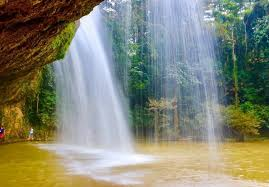

Địa chỉ: cao nguyên Di Linh, dọc quốc lộ 20 và các xã vùng núi của huyện Di Linh cũ.


Địa chỉ: thành phố Bảo Lộc và khu vực Bảo Lâm cũ, phía nam tỉnh Lâm Đồng.
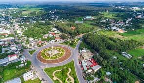
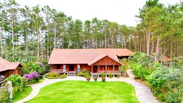
Địa chỉ: thị trấn Thạnh Mỹ và vùng hồ Đa Nhim, huyện Đơn Dương cũ, tỉnh Lâm Đồng.
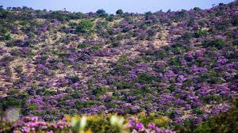
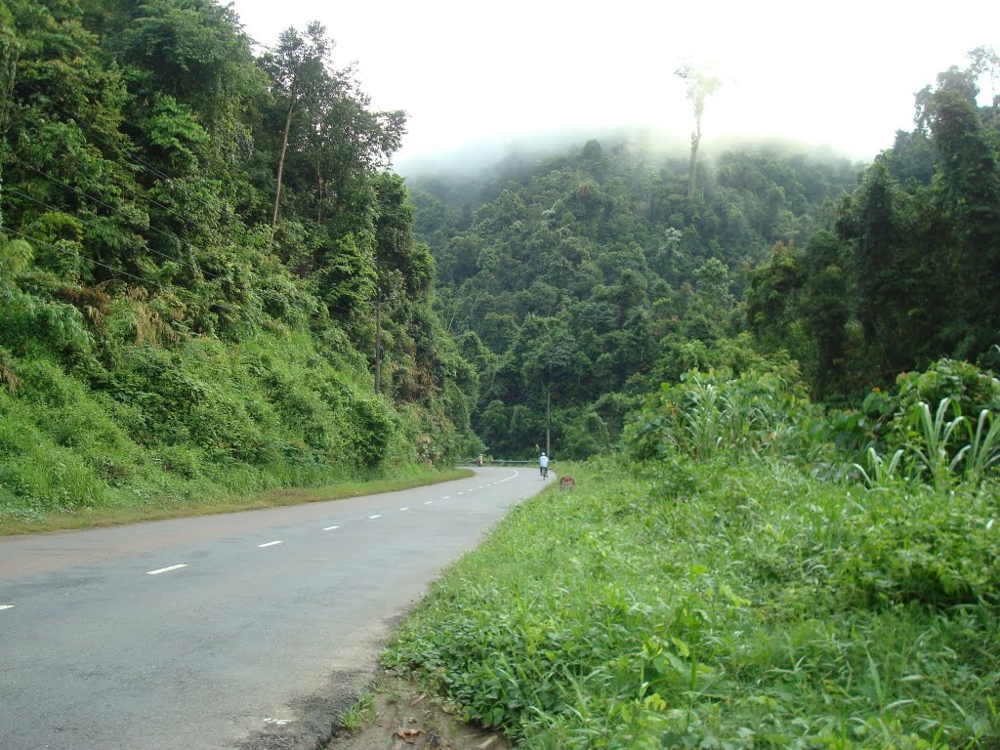
Địa chỉ: huyện Đạ Huoai cũ, phía tây nam tỉnh Lâm Đồng, nơi gặp sông Đồng Nai và rừng lớn.
Phù hợp để phát triển thành các bài 2 ngày 1 đêm, 3 ngày 2 đêm hoặc 5 ngày 4 đêm.
Một vài lưu ý ngắn để khách dễ lên kế hoạch, đặc biệt khi kết hợp cao nguyên, thác nước và biển.
Đà Lạt, Bảo Lộc, Di Linh đẹp quanh năm nhưng sáng sớm và chiều tối thường lạnh. Phan Thiết - Mũi Né hợp đi biển vào mùa nắng, còn Đắk Nông đẹp khi thác và hồ có nhiều nước.
Nếu đi nhiều vùng, nên chia tuyến theo cụm: Bảo Lộc - Bảo Lâm; Đà Lạt - Đức Trọng - Lâm Hà; Đắk Nông - Tà Đùng; Phan Thiết - Mũi Né - Kê Gà.
Mang áo khoác, giày dễ đi bộ, kem chống nắng, nước uống và kiểm tra thời tiết trước khi đi thác, hồ, rừng hoặc cung đường ven biển.
Không xả rác, không bẻ hoa, không tự ý vào khu vực nguy hiểm, tôn trọng văn hóa địa phương và ưu tiên sử dụng dịch vụ của người dân bản địa.
Không chỉ có cảnh đẹp, vùng đất này còn nổi tiếng với cà phê, trà, hải sản và các trải nghiệm thiên nhiên đặc trưng.
Thưởng thức cà phê rang xay tại Đà Lạt, Di Linh, Bảo Lộc và Lâm Hà.
Dâu tây, hồng treo gió, bơ, sầu riêng và nhiều nông sản địa phương.
Bánh căn, bánh ướt lòng gà, lẩu gà lá é, nem nướng và đặc sản vùng cao.
Hải sản tươi sống tại Phan Thiết, Mũi Né và các làng chài ven biển.
Từ cao nguyên se lạnh đến biển xanh nắng vàng, Lâm Đồng mở rộng là điểm đến đa dạng cho nghỉ dưỡng, check-in, khám phá thiên nhiên, văn hóa và ẩm thực địa phương.